Техника республики
Наземная, воздушная и космическая техника Великой Армии Республики
Наземная техника
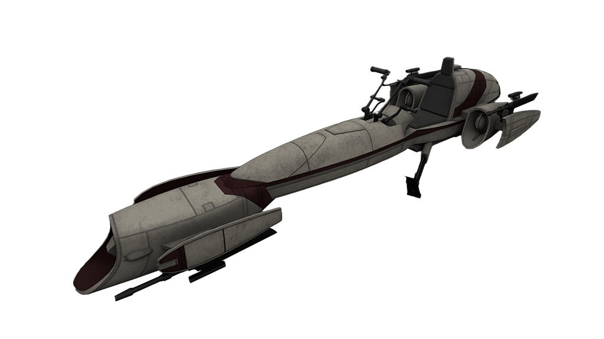
BARC спидер
Модель одноместного модифицированного спидера, изначально используемая элитными разведчиками-коммандос при выполнении опасных заданий во время Войн клонов. Хорошо себя зарекомендовав, данный транспорт стал использоваться и другими солдатами Великой армии Республики. Спидеры позволяли обычным солдатам-клонам сражаться на земле с невероятной скоростью, мобильностью и огневой мощью. Использовавшиеся в основном для разведывательных и эскортных миссий, спидеры были легко приспосабливаемы для действий в различных условиях.
- Длина: 4,57 м
- Максимальная скорость: 520 км/ч
- Вооружение: Лёгкая сдвоенная бластерная пушка
- Экипаж: 1 водитель
- Грузоподъёмность: 5 кг
- Производитель: Репульсорная компания «Аратек»
- Стоимость: новый — 8300 кредитов, поддержанный — 1500 кредитов
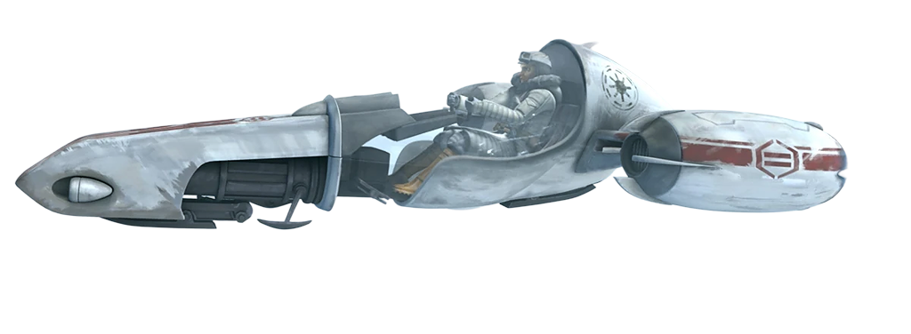
СВУП-СК-6
Все CK-6 обладали закрытыми транспластилом кабинами, что эффективно защищало их пилотов от снега и холодного ветра. Эти свупы продолжали работать в самые суровые метели и позволяли солдатам-клонам вести боевые действия в таких условиях, когда использование канонерок и прочих летающих транспортных средств не представлялось возможным. Тем не менее, без ухода и заботы своих владельцев эти свупы быстро замерзали и становились совершенно бесполезными.
- Производитель: Неизвестен
- Тип: Снежный вездеход
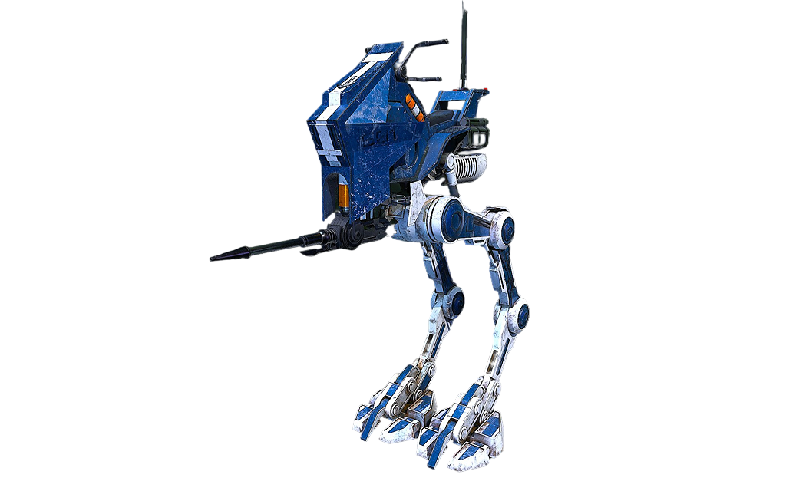
AT-RT — разведывательный транспортный вездеход
Лёгкий маневренный шагоход, использовавшийся преимущественно на городском, песчаном и болотном театрах боевых действий. AT-RT являлся предшественником шагоходов AT-ST и AT-PT. В высоту имел 3,2 м, в длину — 2,9. Изготовлен с открытым верхом с сиденьем и рулём, как у мотоспидера, рассчитанными на одного седока. Отсутствие защищённой кабины делало водителя AT-RT лёгкой мишенью для снайперов, но небольшой размер машины и свободный круговой обзор компенсировали этот недостаток.
- Высота: 3,2 м
- Длина: 2,9 м
- Экипаж: 1
- Вооружение: Автоматическая бластерная пушка, миномётная установка
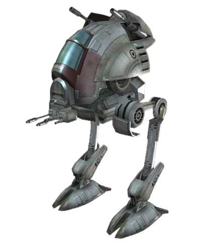
AT-XT — экспериментальный транспортный вездеход
Штурмовой одноместный шагоход, созданный для Великой Армии Республики в ходе Войн Клонов. Не пошёл в серийное производство. AT-XT оснащался парными лазерными пушками и протонными миномётами (также спаренными). Заменял целый миномётный расчёт с прикрытием автоматчиков, притом легко управлялся одним бойцом. Один из первых шагоходов, оборудованных щитом.
- Тип: Экспериментальный шагоход
- Экипаж: 1
- Вооружение: Парные лазерные пушки, спаренные протонные миномёты
- Особенности: Защитный щит
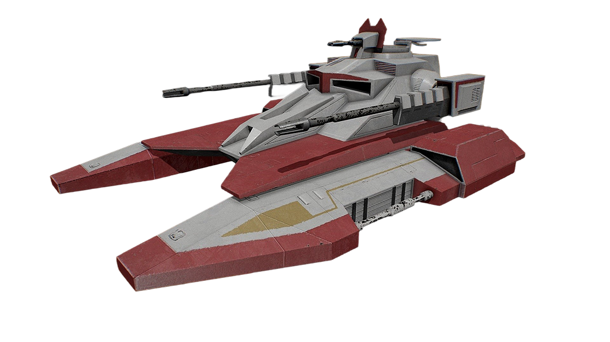
TX-130 — боевой танк
Универсальное наземное боевое устройство Великой армии Республики. Более быстрый, чем первое поколение шагоходов, TX-130 нёс среднюю лазерную пушку как основное оружие. Второстепенным оружием была реактивная пусковая установка. Броня танка достаточно тяжёлая, чтобы гарантировать долговечность, но достаточно лёгкая, чтобы обеспечивать высокую маневренность.
- Производитель: Тяжёлое машиностроение Ротаны
- Вооружение: Средняя лазерная пушка, реактивная пусковая установка
- Экипаж: 1 (джедай) или 3 (клоны)
- Особенности: Композитная броня, дефлекторные щиты
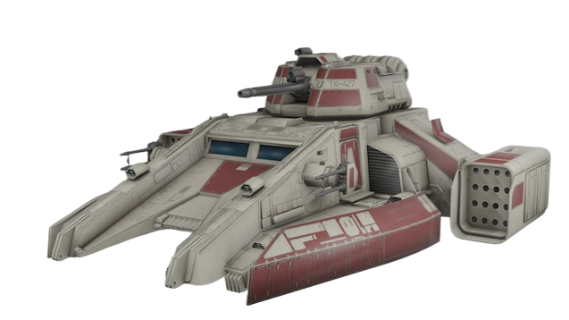
TX-427 — истребительный танк
Лёгкий, скорострельный репульсорный танк, производимый компанией Rothana Heavy Engineering. Он был оснащён двумя боковыми тяжёлыми лазерными пушками, двумя боковыми ракетными установками и тяжёлой плазменной турелью, расположенной наверху.
- Производитель: Rothana Heavy Engineering
- Тип: Репульсорный танк
- Вооружение: Тяжёлые лазерные пушки, ракетные установки, плазменная турель
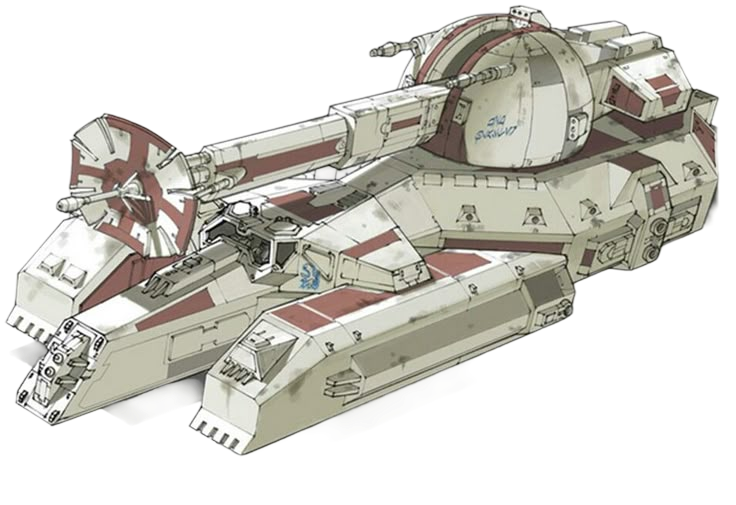
RX-200 «Фальшион» — штурмовой танк
Репульсорная боевая машина, напоминающая уменьшенную версию SPHA-T. В битве при Маластаре «Фальшионы» использовались для отражения воздушных атак сепаратистских бомбардировщиков типа «Гиена». Хотя точность попадания была невысокой, один луч мог вывести из строя сразу несколько таких звездолётов.
- Производитель: Неизвестен
- Тип: Репульсорный танк
- Особенности: Противовоздушная оборона
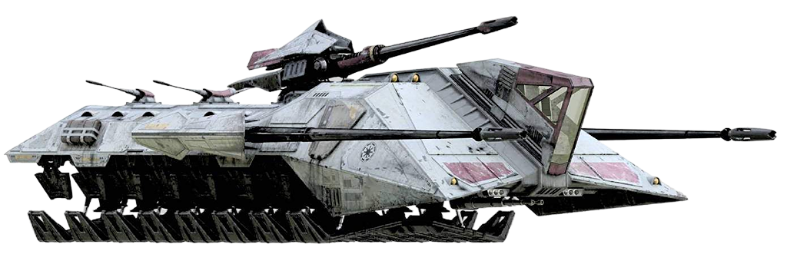
UT-AT «Трезубец»
Военно-транспортное штурмовое средство, использовавшееся там, где AT-TE были бесполезны. Репульсорный транспорт высокой проходимости с возможностью транспортировки солдат и хорошей огневой мощью. Парил в воздухе на 16 пластинах репульсорных проекторов, что давало отличную плавность хода и устойчивость.
- Производитель: Тяжёлое машиностроение Ротаны
- Экипаж: 2 (водитель, оператор вооружения)
- Вооружение: Тяжёлая лазерная пушка, лучемёты
- Вместимость: 30 солдат
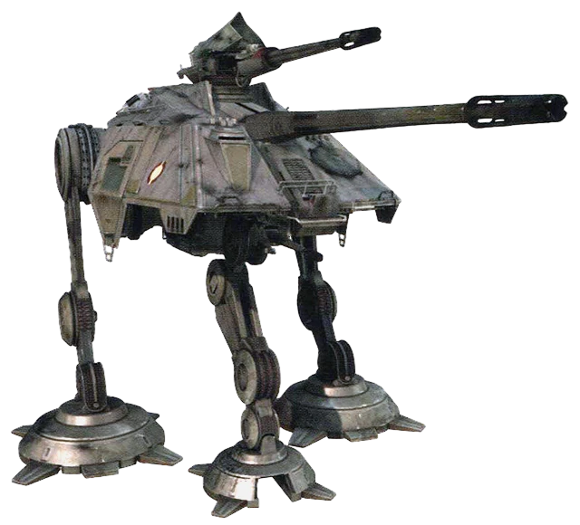
AT-AP — вездеходная штурмовая платформа
Шагоход с нестандартной подвеской из трёх шагающих опор, сочетавший элементы AT-TE и AT-PT. Применялся Великой армией Республики в конце Войны клонов. Оснащён двумя сонаправленными пушками: бластерной и тяжёлой пусковой установкой. Скорострельная лазерная пушка располагалась снизу и использовалась для противодействия пехоте и лёгкой технике.
- Тип: Штурмовой шагоход
- Вооружение: Бластерная пушка, тяжёлая пусковая установка, скорострельная лазерная пушка
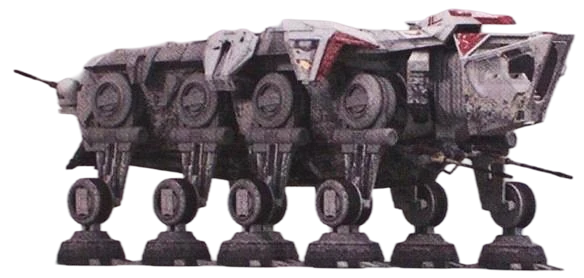
AT-OT — транспортный вездеход открытого типа
Транспортный шагоход, использовавшийся в качестве грузового и транспортного средства. Даже при восьмиопорной ходовой, хорошей броне и четырёх оборонительных лазерных орудиях, эти машины были очень уязвимы из-за открытого верха. Имел минимум 34 места для солдат клонов.
- Вместимость: 34+ солдат
- Вооружение: 4 оборонительные лазерные пушки
- Особенности: Открытый верх
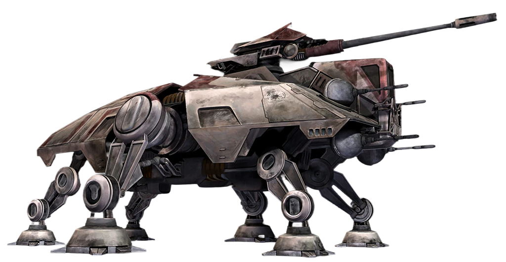
AT-TE — штурмовой вездеход
Шагающий штурмовой вездеход, разработанный для Великой армии Республики. Многоцелевая боевая машина, приспособленная для выполнения широкого спектра функций — от транспортировки отрядов солдат-клонов до непосредственного участия в атаках вражеских позиций. АТ-ТЕ были неуязвимы для ионного оружия благодаря встроенным электромагнитным щитам.
- Максимальная скорость: 60 км/ч
- Экипаж: 7 человек
- Вооружение: Электромагнитное орудие, 6 лазерных орудий
- Особенности: Электромагнитные щиты
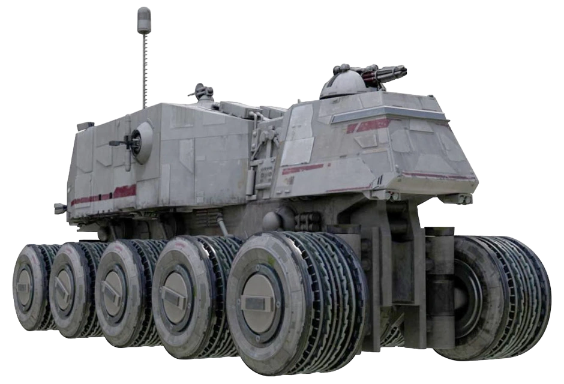
HAVw A6 «Джаггернаут»
Тяжёлый колесный штурмовой транспорт, модернизированная версия A5. За свой массивный и неповоротливый внешний вид получил прозвище «катящаяся плита». Вдвое превышая размеры своего предшественника, A6 достигал 49,4 метра в длину и 30,4 метра в высоту.
- Длина: 49,4 м
- Высота: 30,4 м
- Вместимость: до 300 солдат
- Производитель: Верфи Куата

HAVw A5 «Джаггернаут»
Тяжёлое десятиколёсное боевое транспортное средство производства компании «Верфи Куата». В годы Войны клонов состоял на вооружении Галактической Республики, а позднее использовался Галактической Империей.
- Производитель: Верфи Куата
- Тип: Колёсный транспорт
Воздушная техника
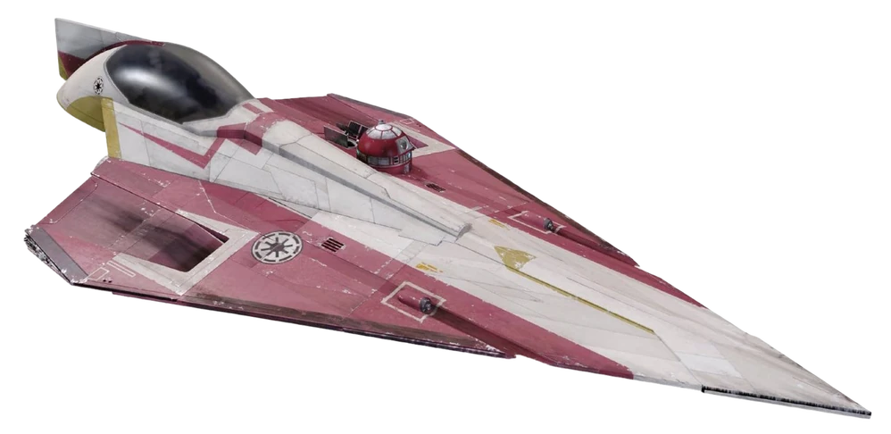
Дельта-7 «Эфирная фея» — лёгкий перехватчик
Более известный как Джедайский истребитель. Разработанный инженером Уолексом Блиссексом, «Эфирная фея» изначально была слишком мала для установки гипердвигателя; для путешествий на сверхсветовой скорости ей приходилось полагаться на внешние разгонные кольца. Имела очень мощные досветовые двигатели, придававшие ей максимальное ускорение в 5000 G.
- Модель: Дельта-7 Aethersprite
- Разработчик: Уолекс Блиссекс
- Ускорение: 5000 G
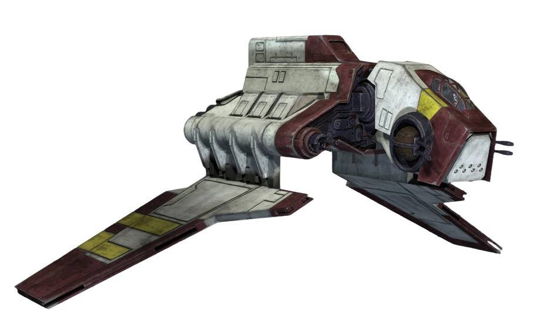
Штурмовой шаттл типа «Ню»
Атакующий шаттл, используемый Великой армией Республики. Был гораздо более живучим и быстрым кораблём, чем обычная канонерка LAAT/i. Имел более прочную броню и щит, однако уступал LAAT/i во вместительности — мог перевозить лишь 30 солдат-клонов.
- Производитель: Cygnus Spaceworks
- Вместимость: 30 солдат
- Особенности: Прочная броня, щиты
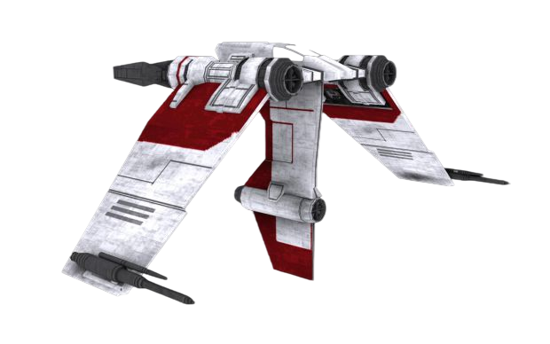
V-19 «Поток» — звёздный истребитель
Предшественник звёздного истребителя «V-wing». Уникальность V-19 заключалась в его разворачивающихся крыльях, на каждом из которых стояли субсветовые двигатели. Первоначально разработанные как истребители ближнего боя, позже были дооборудованы гипердвигателями.
- Производитель: Слайн и Корпил
- Вооружение: 2 лазерные пушки, 2 ракетные пусковые установки
- Особенности: Разворачивающиеся крылья
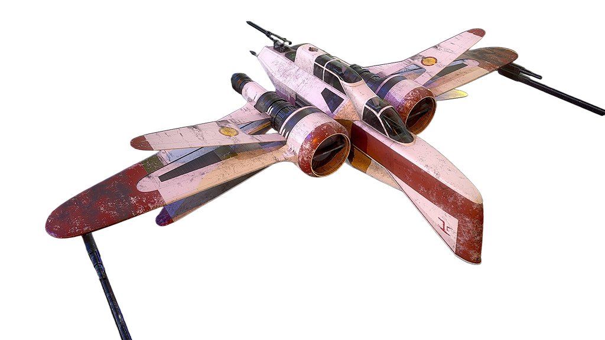
ARC-170 — агрессивный истребитель-разведчик
Тяжёлый истребитель-бомбардировщик, совместно производимый корпорациями «Инком» и «Субпро». Обладал мощным вооружением: шесть протонных торпед дополнялись среднекалиберными лазерными пушками. Экипаж состоял из трёх клонов: пилота, второго пилота-стрелка и хвостового стрелка.
- Производитель: Incom / Subpro
- Экипаж: 3 клона
- Вооружение: 6 протонных торпед, лазерные пушки
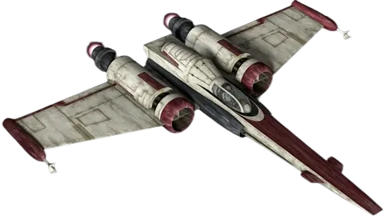
Z-95 «Охотник за головами»
Одноместный звёздный истребитель, модификация популярного Z-95. Отличался скоростью и маневренностью за счёт своей обтекаемой конструкции. Был вооружён лазерными пушками и торпедными установками, а его щиты надёжно прикрывали истребитель в бою.
- Производитель: Incom / Subpro
- Экипаж: 1
- Вооружение: Лазерные пушки, торпедные установки
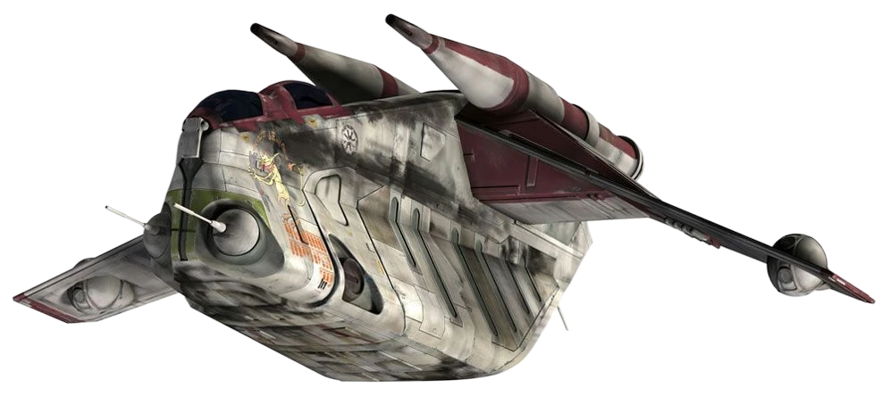
LAAT — канонерка
Серия канонерок, использовавшаяся Великой армией Республики. Разработана для доставки до 30 солдат-клонов к полю боя и их поддержки. Большинство оружейных систем было разработано как для ведения боя в воздухе, так и для поддержки наземных сил.
- Производитель: Тяжёлое машиностроение Ротаны
- Вместимость: 30 солдат
- Вооружение: Лазерные турели, ракетные установки
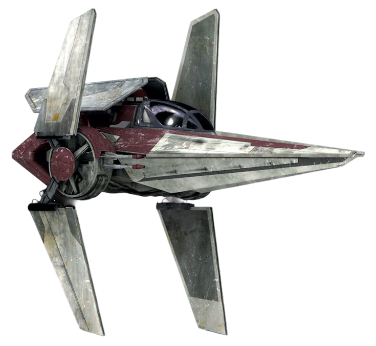
V-wing — звёздный истребитель
Истребитель ближнего радиуса действия, имевший клиновидную форму. На концах его крыльев были установлены лазерные пушки. Между крыльями и корпусом скрывались две сдвоенные лазерные пушки на поворотных турелях, что обеспечивало широкий угол обстрела.
- Модель: Альфа-3 Nimbus-class
- Вооружение: Лазерные пушки на поворотных турелях
- Особенности: Откидные крылья-радиаторы
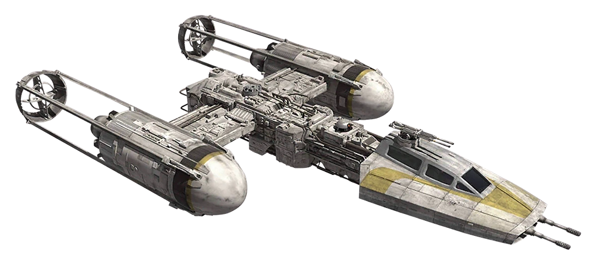
Y-wing — многоцелевой бомбардировщик
Серия многоцелевых бомбардировщиков, производимых компанией «Производство Коенсэра». Конструкция Y-крыла включает три основных компонента: передний кабинный модуль, усиленная центральная стрела и поперечное крыло с ионным реактором и двигателями.
- Производитель: Производство Коенсэра
- Модели: BTL-A4, BTL-B, BTL-S3
- Особенности: Многоцелевой бомбардировщик
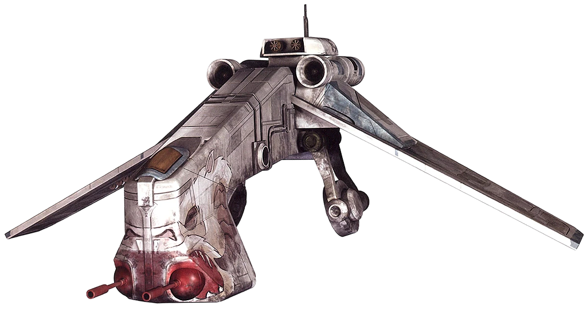
LAAT/c — лёгкий воздушный транспортник
Лёгкий воздушный транспортник из серии LAAT, предназначенный для доставки на поле боя боевого шагохода AT-TE. Инженеры взяли за основу LAAT/i, изменив положение крыльев и установив вместо десантного отделения мощные магнитные захваты.
- Производитель: Тяжёлое машиностроение Ротаны
- Предназначение: Транспортировка AT-TE
- Особенности: Магнитные захваты
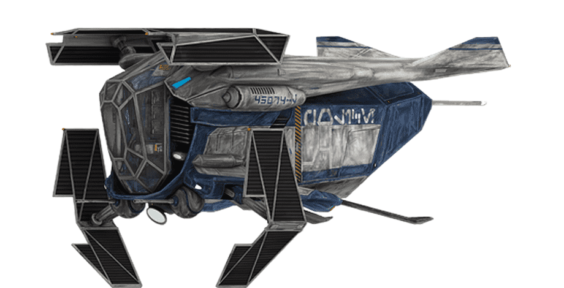
LAAT/le — патрульный транспорт
Боевой корабль, введённый во время Войн клонов для выполнения правоохранительных функций в столице Республики — Корусанте. Разработанный для того, чтобы быть более маневренным, чем LAAT/i, а также менее вооружённым.
- Производитель: Тяжёлое машиностроение Ротаны
- Класс: Патрульно-штурмовой транспорт
Космическая техника
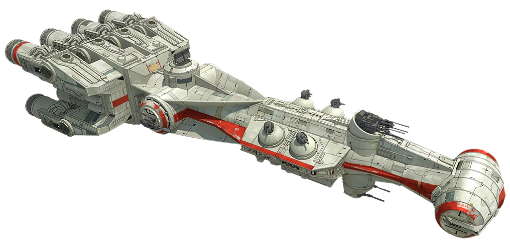
CR90 — корвет
Многоцелевой корабль, производимый Corellian Engineering Corporation. Имел модульную конструкцию, что позволяло легко изменить его конфигурацию. Обычная конфигурация подразумевала его как транспорт, лёгкий корабль эскорта или пассажирский лайнер.
- Производитель: Corellian Engineering Corporation
- Вооружение: 2 сдвоенных турболазера H9, 4 одинарных турболазера
- Особенности: Модульная конструкция
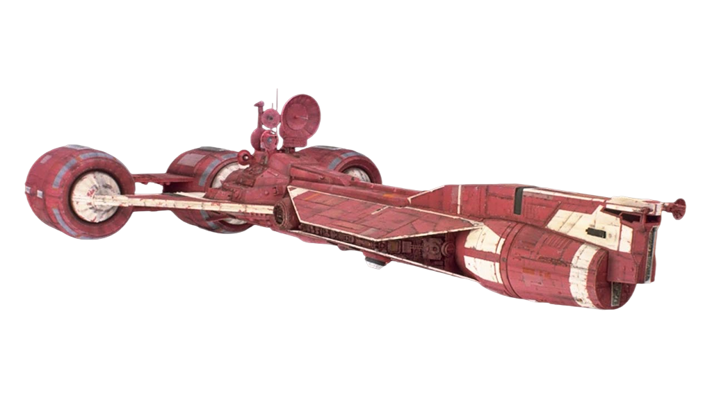
«Сияющий VII» — консульский крейсер
Один из многих космических крейсеров, используемых Галактической Республикой для перевозки дипломатов. Имел 115 метров в длину, 3 радиальных двигателя, гипердвигатели второго класса. В крейсере могли поместиться экипаж из 8 существ и 16 пассажиров.
- Длина: 115 м
- Экипаж: 8
- Пассажиры: 16
- Особенности: Дипломатический иммунитет
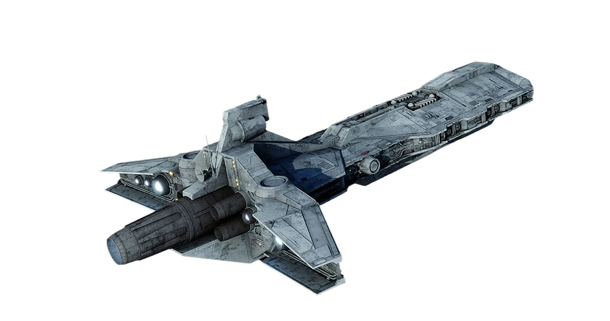
Пельта — медицинский фрегат
Крупный корабль модульного дизайна, использовавшийся в качестве медицинского звездолёта. Медицинский вариант был окрашен в красный цвет Республиканского флота. Имел тяжёлую броню, лёгкие турболазерные батареи и лазерные пушки объектовой обороны.
- Тип: Медицинский фрегат
- Вооружение: 2 лёгкие турболазерные батареи, 3 лазерные пушки
- Особенности: Модульный дизайн
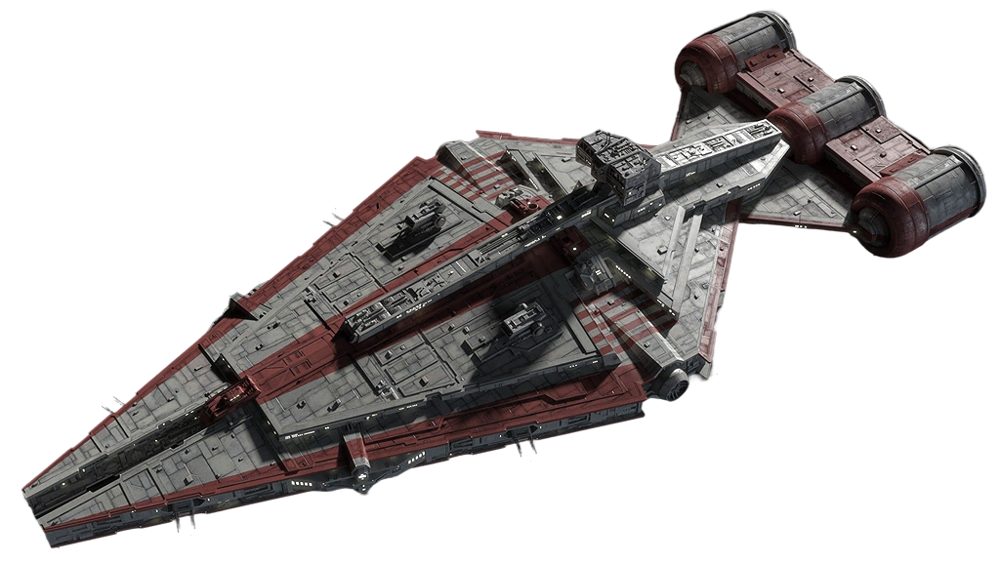
Арквитенс — лёгкий крейсер
Звёздный корабль, состоявший во флоте Галактической Республики. Напоминал уменьшенную версию звёздного разрушителя типа «Венатор» с двигателями от крейсера типа «Консульский». Суммарная огневая мощь была весьма велика для эскортного корабля.
- Вооружение: Сдвоенные турболазерные пушки, ракетные установки
- Особенности: Т-образная командная башня
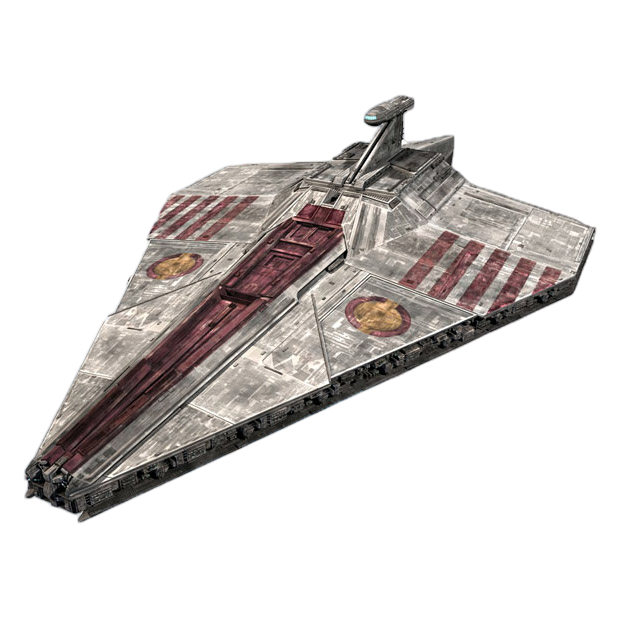
Аккламатор — десантный корабль
752-метровый штурмовой транспорт, мог доставить на поле боя несколько тысяч солдат-клонов. Вооружён 4 тяжёлыми торпедными установками, 24 лазерными огневыми точками и 12 сдвоенными турболазерными орудиями. Группа таких кораблей была в состоянии выполнить орбитальную бомбардировку.
- Длина: 752 м
- Вместимость: несколько тысяч солдат
- Вооружение: Турболазеры, торпедные установки
- Особенности: 80 канонерок LAAT/i
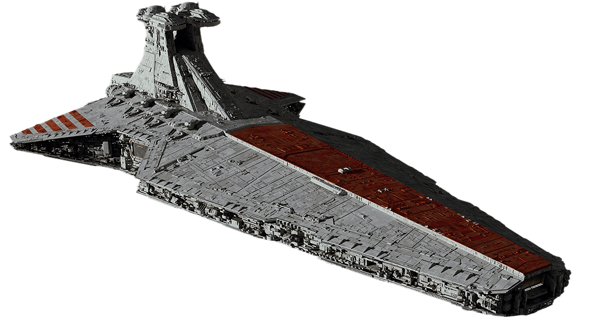
Венатор — звёздный разрушитель
Один из основных кораблей, использовавшихся Великой армией Республики. Имел 1 137 метров в длину, делая его одним из крупнейших кораблей, приспособленных к атмосферным операциям. Был оснащён мощными двигателями, гипердвигателем, надёжными дефлекторными щитами и большим парком истребителей.
- Длина: 1 137 м
- Производитель: Верфи Куата
- Вооружение: 8 тяжёлых сдвоенных турболазеров DBY-827
- Особенности: Носитель истребителей
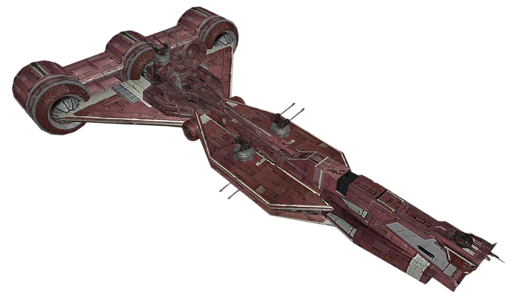
Консульский крейсер
Крейсер, производимый Corellian Engineering Corporation. Используется Галактической Республикой для транспортировки джедаев и дипломатов в проблемные места по всей галактике.
- Производитель: Corellian Engineering Corporation
- Класс: Консульский крейсер
- Особенности: Дипломатический иммунитет